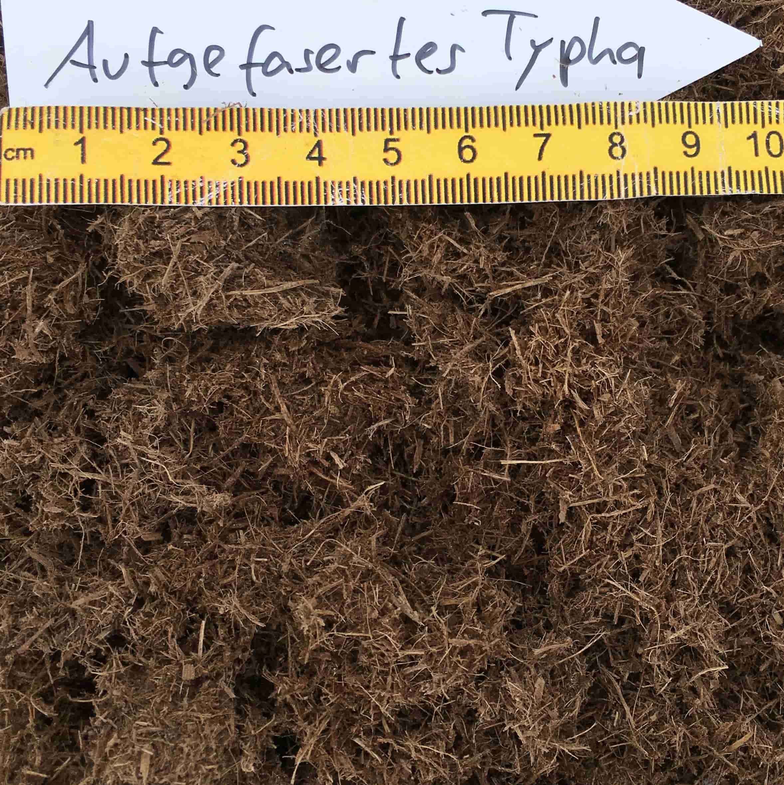
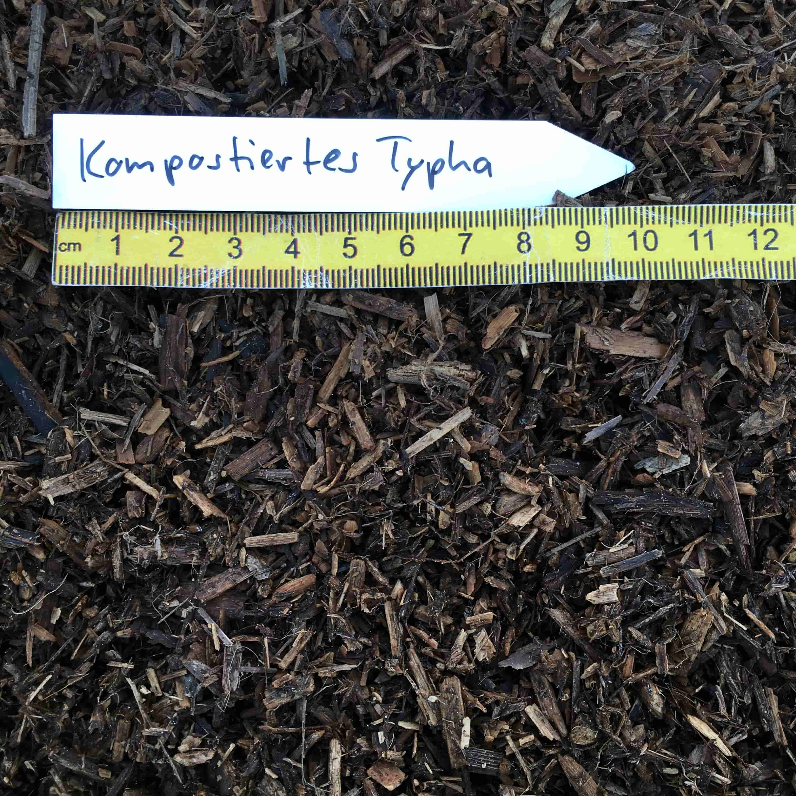
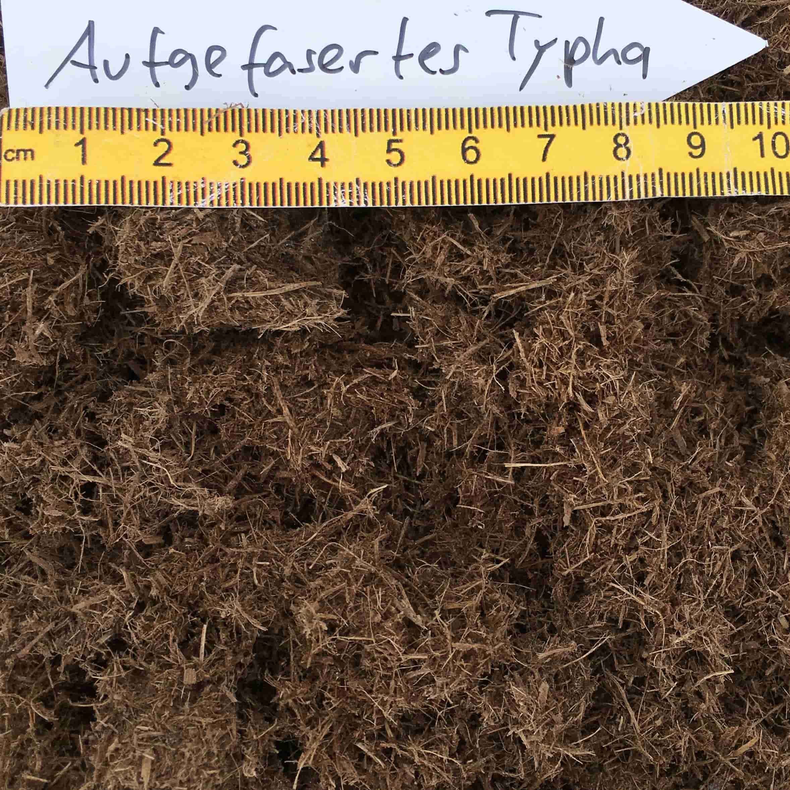
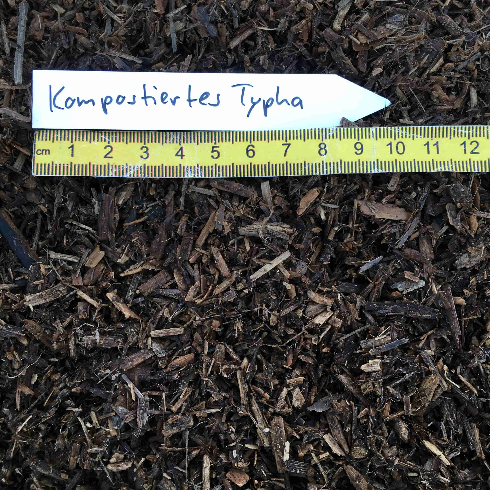
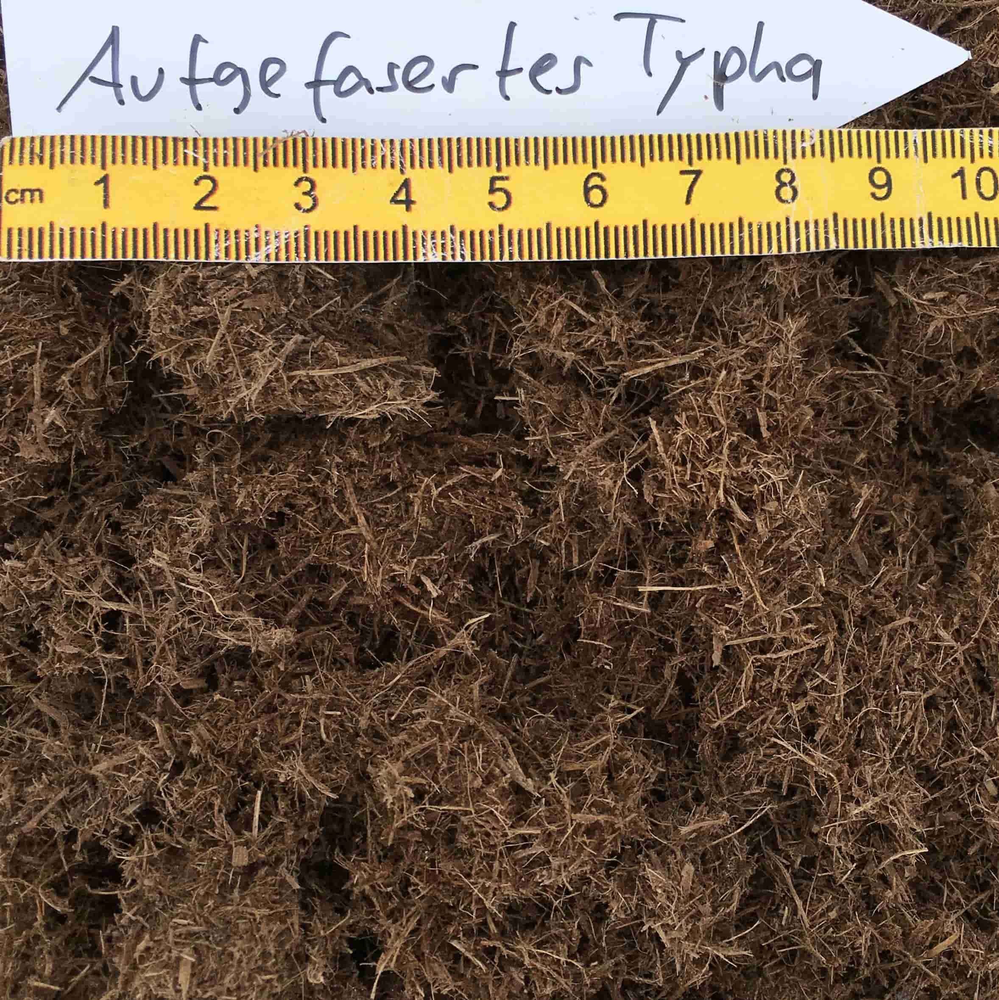
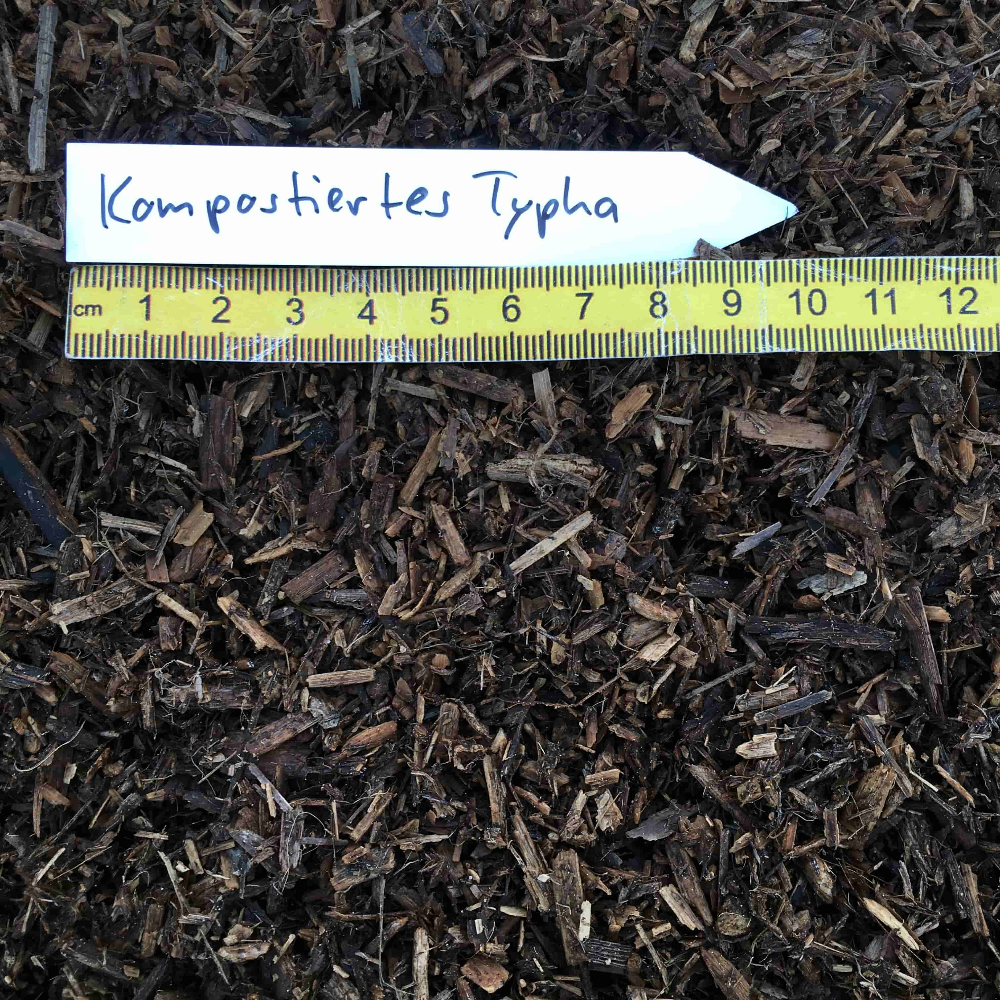

UMWELTBUNDESAMT (2022): Treibhausgas-Emissionen aus Mooren. https://www.umwelt-bundesamt.de/bild/treibhausgas-emissionen-aus-mooren (Zugriff am 01. Juni 2022).
HEINZ, S. (2012): Population biology of Typha latifolia L. and Typha angustifolia L.: establishment, growth and reproduction in a constructed wetland. Shaker Verlag, 108 Seiten.
TANNEBERGER, F., ABEL, S., COUWENBERG, J., DAHMS, T., GAUDIG, G., GÜNTHER, A., KREYLING, J., PETERS, J., PONGRATZ, J., JOOSTEN, H. (2021): Towards net zero CO2 in 2050: An emission reduction pathway for organic soils in Germany. Mires and Peat, 27, 05, 17pp.
ABEL, S., COUWENBERG, J., DAHMS, T., JOOSTEN, H. (2013): The Database of Potential Paludiculture Plants (DPPP) and results for Western Pomerania. Plant Diversity and Evolution 130, 219 – 228.
VERHEES, L. (2018): Typha as renewable ingredient in plant potting substrates as alternative for peat. PPT-Präsentation, Radboud University, 29.11.2018.
HARTUNG, C. und EICKENSCHEIDT, T. (2018): Verwertung von Niedermoor- Paludikultur-Pflanzen als Biogas-Substrat und Torfersatzstoff, PowerPoint Präsentation, 13.07.2018. MoorUse Projekt.
